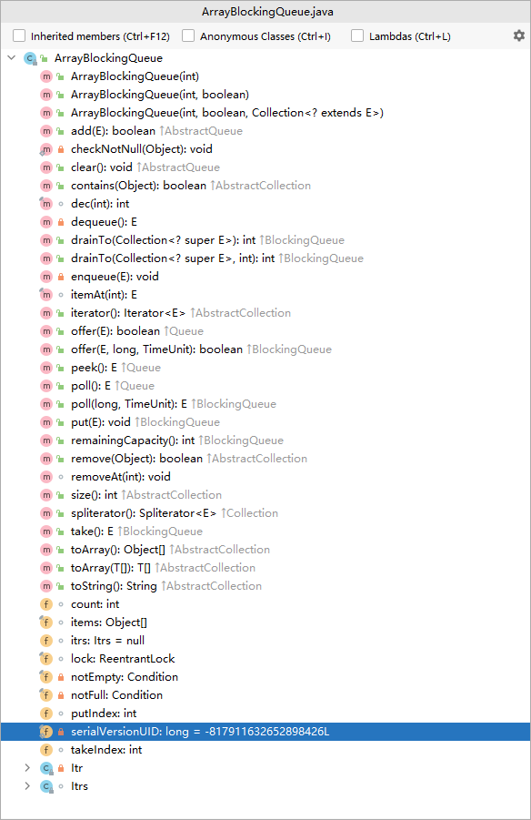
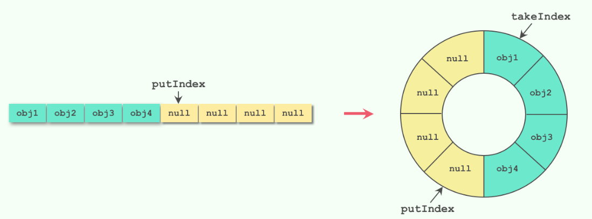

ArrayBlockingQueue ArrayBlockingQueue是最典型的有界阻塞队列，其内部是用数组存储元素的，初始化时需要指定容量大小，利用 ReentrantLock 实现线程安全。
在生产者-消费者模型中使用时，如果生产速度和消费速度基本匹配的情况下，使用ArrayBlockingQueue是个不错选择；但如果生产速度远远大于消费速度，则会导致队列填满，大量生产线程被阻塞。
使用独占锁ReentrantLock实现线程安全，入队和出队操作使用同一个锁对象，也就是只能有一个线程可以进行入队或者出队操作；这也就意味着生产者和消费者无法并行操作，在高并发场景下会成为性能瓶颈。
ArrayBlockingQueue：有界阻塞队列，先进先出，存取相互排斥

数据结构：静态数组
容量固定必须指定长度。没有扩容机制
没有元素的位置也占用空间，被null占位
锁(ReentrantLook)：存取是同一把锁，操作的是同一个数组对象，存取互相排斥
阻塞对象：
notEmpty：出队：队列count=0，无元素可取时，阻塞在该对象上
notFull：入队：队列count=length，放不进去元素时，阻塞在该对象上
两个操作：
入队：从队首开始添加元素，记录putIndex（到队尾时设置为0）唤醒notEmpty
出队：从队首开始提取元素，记录takeIndex（到队尾时设置为0）唤醒notFull
两个指针都是从队首向队尾移动，保证队列的先进先出原则
基本使用 1 2 3 BlockingQueue queue = new ArrayBlockingQueue(1024 ); queue.put("1" ); Object object = queue.take();
实现原理 数据结构
利用了Lock锁的Condition通知机制进行阻塞控制。
核心：一把锁，两个条件
1 2 3 4 5 6 7 8 9 10 11 12 13 14 15 16 17 18 19 20 21 22 23 24 final Object[] items;int takeIndex;int putIndex;int count;final ReentrantLock lock;private final Condition notEmpty;private final Condition notFull; public ArrayBlockingQueue (int capacity) this (capacity, false ); } public ArrayBlockingQueue (int capacity, boolean fair) ... lock = new ReentrantLock(fair); notEmpty = lock.newCondition(); notFull = lock.newCondition(); }
入队put方法
1 2 3 4 5 6 7 8 9 10 11 12 13 14 15 16 17 18 19 20 21 22 23 24 25 26 27 28 public void put (E e) throws InterruptedException checkNotNull(e); final ReentrantLock lock = this .lock; lock.lockInterruptibly(); try { while (count == items.length) notFull.await(); enqueue(e); } finally { lock.unlock(); } } private void enqueue (E x) final Object[] items = this .items; items[putIndex] = x; if (++putIndex == items.length) putIndex = 0 ; count++; notEmpty.signal(); }
出队take方法 1 2 3 4 5 6 7 8 9 10 11 12 13 14 15 16 17 18 19 20 21 22 23 24 25 26 27 28 public E take () throws InterruptedException final ReentrantLock lock = this .lock; lock.lockInterruptibly(); try { while (count == 0 ) notEmpty.await(); return dequeue(); } finally { lock.unlock(); } } private E dequeue () final Object[] items = this .items; @SuppressWarnings ("unchecked" ) E x = (E) items[takeIndex]; items[takeIndex] = null ; if (++takeIndex == items.length) takeIndex = 0 ; count--; if (itrs != null ) itrs.elementDequeued(); notFull.signal(); return x; }
环形数组 

Copyright 2021 sunfy.top ALL Rights Reserved